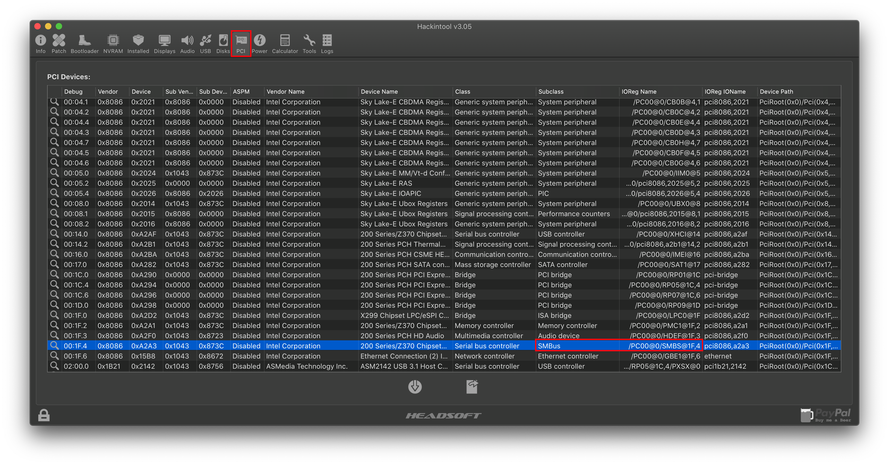
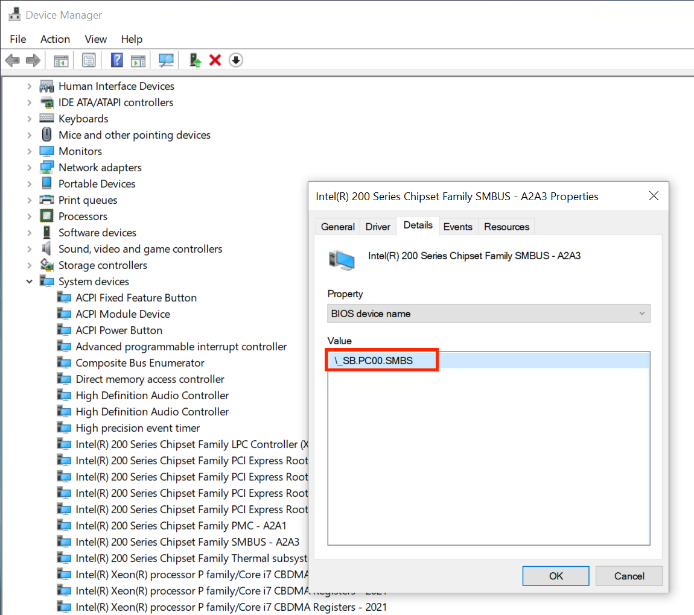

Last modified: Mon May 11 2020 00:23:38 GMT+0000 (Coordinated Universal Time)
Fixing SMBus support
This section of the guide refers to fixing AppleSMBus support in macOS, what is AppleSMBus? Well this mainly handles the System Management Bus, which has many functions like:
- AppleSMBusController
- Aids with correct temperature, fan, voltage, ICH, etc readings
- AppleSMBusPCI
- Same idea as AppleSMBusController except for low bandwidth PCI devices
- Memory Reporting
- Aids in proper memory reporting and can aid in getting better kernel panic details if memory related
- Other things SMBus does: SMBus wiki
For install purposes, this SSDT isn't needed but for post-install it's recommended to put the final touches on your hack.
So to get started, we'll want to grab our SMBus SSDT:
So the important parts we care about are:
External (_SB_.PCI0, DeviceObj) <- Rename this
External (_SB_.PCI0.SBUS.BUS0, DeviceObj) <- Rename this
Scope (_SB.PCI0) <- Rename this
{
Device (MCHC)
{
Name (_ADR, Zero) // _ADR: Address
}
}
Device (_SB.PCI0.SBUS.BUS0) <- Rename this
To find the correct pathing for your devices, grab Hackintool (Github link) and head to the PCI tab:

Look for the SMBus device under Subclass, then look beside and you'll see the ACPI path(under IOReg Name). To convert , omit @...
/PC00@0/SMBS@1F,4->PC00.SMBS
Once finished, it'll look something like this:
External (_SB_.PC00, DeviceObj) <- Renamed
External (_SB_.PC00.SMBS.BUS0, DeviceObj) <- Renamed
Scope (_SB.PC00)
{
Device (MCHC)
{
Name (_ADR, Zero) // _ADR: Address
}
}
Device (_SB.PC00.SMBS.BUS0) <- Renamed

For those having issues, you can also check Device Manager -> CPU -> BIOS device Name
Note: The MCHC is actually the DRAM controller, similar idea to SMBus for fixing memory reporting